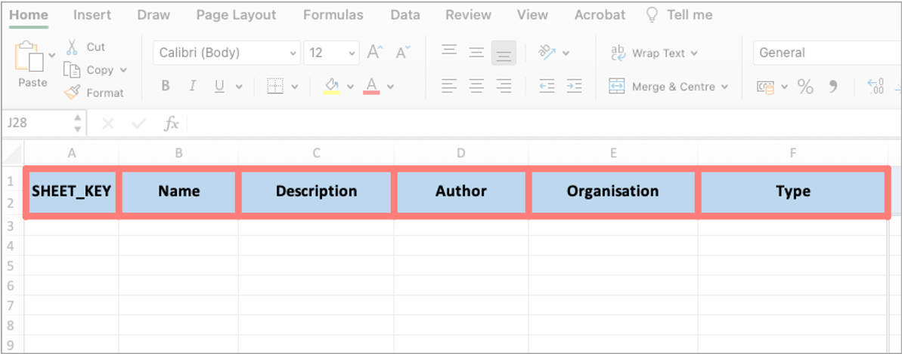
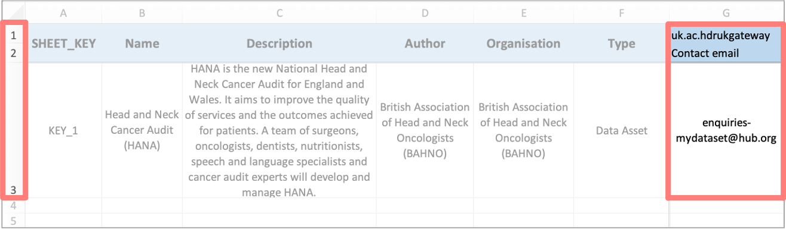
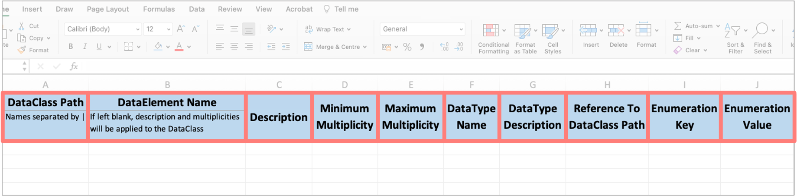
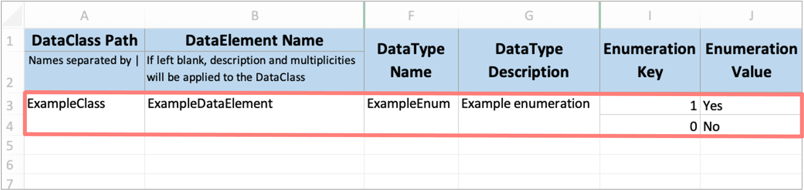
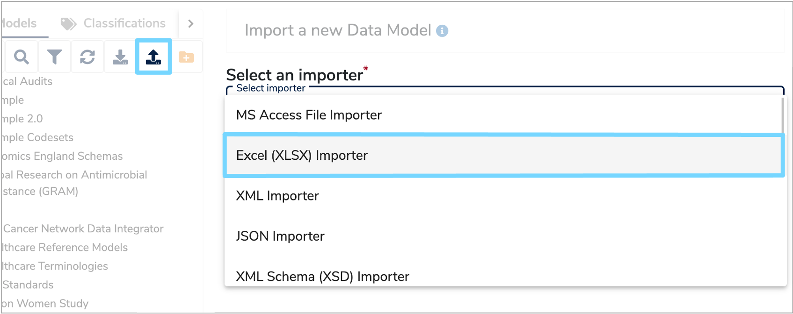
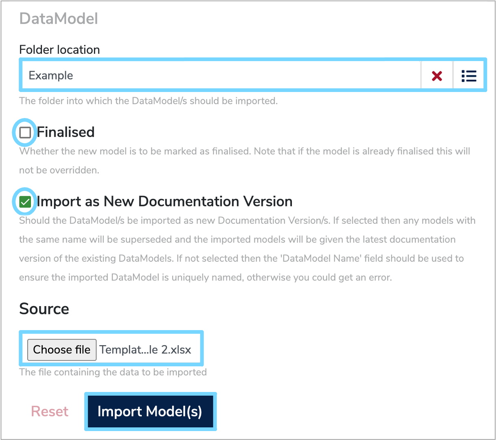

Import a Data Model from Excel
This user guide will explain the steps you need to follow to import a health dataset into Mauro Data Mapper using an Excel spreadsheet.
To add an existing dataset to Mauro Data Mapper, you can either enter all the information online as explained in the 'Document a Health Dataset user guide', or you may find it more convenient to import information automatically from an Excel spreadsheet.
The importing functionality of Mauro Data Mapper allows you to import several Data Models using the same spreadsheet.
1. Create Data Model import file¶
To ensure all the information is imported correctly, the dataset needs to be entered into a spreadsheet in a specific format. To help with this, you can download a zip file of the standard Data Model import file here.
This standard spreadsheet contains two types of worksheets. Firstly, there is the Data Model listing sheet, titled ‘DataModels’. This is effectively a contents page which lists the main details of each Data Model you wish to import. There must only ever be one Data Model listing sheet.
The next sheet is the Data Model key sheet which is titled ‘KEY_1’. This contains all the relevant details of one Data Model listed in the ‘DataModels’ sheet. Therefore, if you wish to import several Data Models, you will need to add a Data Model key sheet for each additional Data Model and title it ‘KEY_2’, ‘KEY_3’ respectively.
1.1 Data Model listing sheet¶
In the Data Model listing sheet, use one row for each Data Model. Enter the information according to the columns, which are explained below, along with any other properties or metadata which may be relevant.

The following columns must be completed:
-
SHEET_KEY
The unique name of each Data Model key sheet such as ‘KEY_1’, ‘KEY_2’ etc. -
Name
The unique name or Label of the Data Model. Remember this should be different to all the existing Data Models within Mauro Data Mapper, unless you are updating an existing Data Model. -
Description
Enter a description which explains the contextual details of the dataset within the Data Model. -
Author
Record the name(s) of the authors who are creating and maintaining this Data Model. -
Organisation
Type the name of the organisation responsible for the Data Model, or the underlying data. -
Type
This is the type of Data Model, which can either be a Data Asset or a Data Standard.A Data Asset is a collection of existing data, such as a database or a completed form. While a Data Standard is a specification template to collect new data, such as a form or schema.
-
Adding properties
Any other relevant properties or metadata relating to the Data Model can be included in additional columns to the right of the core columns. Metadata can have the following properties:-
Namespace
This will be used to select the correct profile / property selection and should be entered in row 1 of the spreadsheet. If it is left blank, the default namespace of ox.softeng.metadatacatalogue.plugins.excel will be used. -
Key
This is a relevant property name such as ‘contact email’ and must be entered in row 2. If no key is supplied, then the value will not be assigned. -
Value
This is the Value of the given property, for example ‘enquiries-mydataset@hub.org’ and should be entered into the relevant row. If multiple rows are being imported and a Namespace and Key column is created, then the property will only be assigned if a Value is supplied.
-

1.2 Data Model key sheet¶
There should be one Data Model key sheet for each Data Model, and its name should correspond to the relevant 'SHEET_KEY' on the Data Model listing sheet. Any Data Model listed without the correctly named key sheet will not be imported.
Therefore, the best practise is to first copy the 'KEY_1' sheet in the standard excel template, rename it and then add the details of the relevant Data Model. Otherwise, formatting issues could occur, resulting in the data importing incorrectly.

The following columns must be completed:
-
DataClass Path
This is the path from the top level of the Data Model to the Data Class. For a top level Data Class, only the class name should be entered in this field. However, if it is a Nested Data Class, then the name of the parent class along with the child class should be entered and be separated by “I”, for example:- A nested class: 'parentIchild'
- A nested class within a nested class: 'grandparentIparentIchild'
- Another nested class within a nested class: 'grandparentIparentIanotherChild'
-
DataElement Name
If the row is describing a Data Element, instead of a Data Class, then the name of the Data Element should be entered here.If supplied, the remaining information in this row will be used to create the Data Element inside the Data Class provided in the 'DataClass Path' column. However, if left blank, the remaining information in this row will be assigned to the Data Class entered in the 'DataClass Path' column.
-
Description
Enter a description which explains any contextual details relating to the Data Element or Data Class. -
Minimum Multiplicity
The minimum number of instances of the Data Class or Data Element within the Data Model. Optional data has a minimum Multiplicity of 0, whereas mandatory data has a minimum Multiplicity of 1. -
Maximum Multiplicity
The maximum number of instances of the Data Class or Data Element within the Data Model. Optional data has a maximum Multiplicity of 1, whereas data which occurs any number of times and therefore has no upper bound has a maximum Multiplicity of * which represents -1 internally. -
DataType Name
This is the name given to the Data Type of the Data Element being described and must be included when entering information for Data Elements.The Data Type describes the range of possible values that the Data Element may take. There are four different Data Types stored within a Data Model:
-
Enumeration:
A constrained set of possible values. Each Enumeration Type defines a number of Enumeration Values which have a coded key and a human-readable value. -
Primitive:
Data without further details on structure or referencing. Primitive Data Types include ‘String’, ‘Integer’ or ‘Date’. -
Reference:
Data which refers to another Data Class within the same Data Model. -
Terminology:
A structured collection of Enumeration Values which have relationships between different data terms.
-
-
DataType Description
This is a short description of the Data Type. If the same Data Type is used multiple times, then the first description entry will be used so subsequent description fields can be left blank. -
Reference to DataClass Path
If the Data Element is a ‘Reference’ Data Type and therefore the Data Element is a reference to an instance of another Data Class, then the path to that Data Class should be entered here.This path must match a path provided in the 'DataClass Path' column using the same format with ‘I’ as the separator. This field cannot be used in conjunction with ‘Enumeration Key’ and ‘Enumeration Value’.
-
Enumeration Key
If the Data Element is an Enumeration Data Type, then the Key and Value of each Enumeration should be included in the ‘Enumeration Key’ and ‘Enumeration Value’ columns respectively, with one Key and Value per row.The Enumeration Key is the text or string that may appear in a column of the dataset.
-
Enumeration Value
The Enumeration Value is the data that corresponds to the Key. For example, for a yes/no question on a webform, the Value is either ‘Yes’ or ‘No’. Each Value is assigned a Key, which in this case could be ‘1’ and ‘0’ respectively.An Enumeration Value must be provided if an Enumeration Key has been entered.
Once all the Enumeration Key and Value pairs have been entered you will need to merge the corresponding cells in the 'DataClass Path' column, and you may wish to merge the other relevant cells in the other columns too for consistency.
For example, if you were entering the information for a Data Element that was an Enumeration Data Type then the Data Model key sheet would look similar to the below:

2. Import Data Model¶
Once the Data Model import file has been completed, click the 'Import a Data Model' icon at the top right of the Model Tree. The 'Import a new Data Model' form will then appear on the right.
Click the 'Select an importer' box and select 'Excel (XLSX) importer' from the dropdown menu. This will automatically load the rest of the form that you need to complete.

You then need to select the relevant folder that you wish to import the Data Model into. You can do this by either typing in the folder name, or clicking the menu icon to the right of the 'Folder location' box. This will display the Model Tree, from which you can then select the relevant folder.
You then need to tick the 'Finalised' box to indicate whether the Data Model you are importing is finalised. Although, it is recommended to keep the model as a draft until the gateway presentation of model descriptions has been decided.
If the Data Model you are importing is intended to replace an existing Data Model within the current version of Mauro Data Mapper, then tick the 'Import as New Documentation Version' box. This means that the imported model will supersede any Data Models with the same name and will be assigned the latest documentation version of the existing Data Model.
If you are importing a new Data Model, then make sure the 'Name' field in the Data Model listing sheet is unique, otherwise this will cause an error when importing.
In the 'Source' box, click 'Choose file' and your file explorer will open. Navigate to the relevant Data Model import file and then select 'Import Model(s)'.

3. Round Tripping Data Models¶
Excel files can be safely used to 'Round trip' Data Model descriptions. This is essentially where:
- A Data Model is exported in the form of an Excel spreadsheet.
- This exported spreadsheet is edited or updated with new information.
-
The new version of the spreadsheet is re-imported into Mauro Data Mapper and therefore automatically updates the existing Data Model.
Note: 'Import as New Documentation Version' should be ticked when re-importing.
This method is a quick and easy way to update existing Data Models as well as adding extra information. This can be particularly useful when Data Models have previously been imported using an alternative method, and therefore may only have the basic layout.